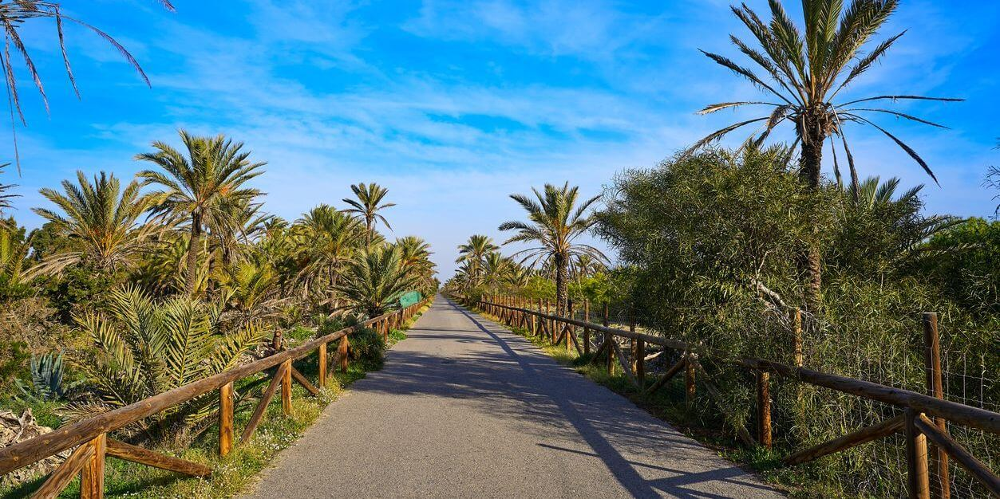
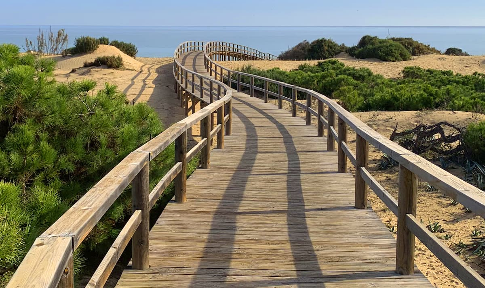
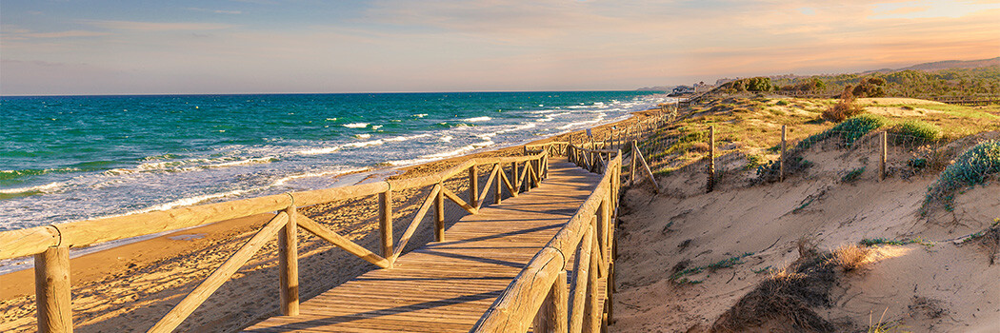

🏖️ ДЮНЫ ГУАРДАМАРА: песчаные дюны и сосновый лес у моря
В Гуардамаре — настоящие песчаные дюны! В начале 1900-х сосны высадили, чтобы остановить наступающий песок. Сегодня — 800 га леса прямо на дюнах, с выходом на пляж.
🌡️ Почему в апреле: +22°C, весенние цветы, не жарко
🌸 Что увидите: Песчаные дюны, сосны, пальмы, раскопки La Fonteta (VIII в. до н.э.)
🥾 Маршрут: ~3 км, лёгкий, прогулка в тени сосен → выход на пляж
🌸 Что увидите: Песчаные дюны, сосны, пальмы, раскопки La Fonteta (VIII в. до н.э.)
🥾 Маршрут: ~3 км, лёгкий, прогулка в тени сосен → выход на пляж
📍 Парк Альфонсо XIII · 💰 Бесплатно
🎯 🐕 с собакой · 👨👩👧 семьям · 💑 парам · 🏃 бегунам
✏️ Фото: альбом 4 шт (Pexels дюны + 3 локальных) · Убрано «тенистый» → «прогулка в тени сосен»
🌲 55❤️ 38
10:00👁 4.9K